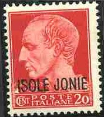
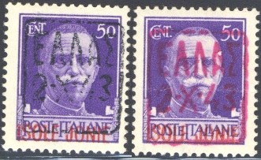
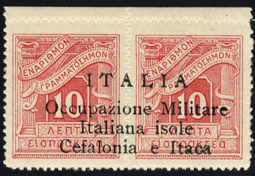

"BOLLO" (red) on a "ISOLE JONIE" (red) on a 50 c airmail stamp of Italy
Iles Ioniennes - Ionische Inseln
Return To Catalogue - Greece - Italy
Note: on my website many of the
pictures can not be seen! They are of course present in the
catalogue;
contact me if you want to purchase the catalogue.
Example:

On postage stamps 5 c brown (red overprint) 10 c brown (red overprint) 20 c red 25 c green 30 c brown (red overprint) 50 c violet (red overprint) 75 c red 1.25 L blue (red overprint) On airmail stamp (horse with wings) 50 c brown (red overprint) On postage due stamps ('Segnatasse') 10 c blue 20 c red 30 c orange 1 L orange
With further "BOLLO" overprint (postage stamps used as fiscal stamp)
"BOLLO" (red) on a "ISOLE JONIE" (red) on a
50 c airmail stamp of Italy

I've seen many stamps on piece with this 'KETKYPA' cancel, all
with the same date; cancelled to order?
I've seen fiscal stamps of Italy "MARCA DA BOLLO" with the same "ISOLE JONIE" overprint.
5 l red and blue 7 D brown (blue overprint) 15 D green ......

10 c brown 25 c green (black or red overprint) 50 c violet (black or red overprint) On airmail stamp 50 c brown
Apparently, these stamps were used on Zakynthos (Zante).

